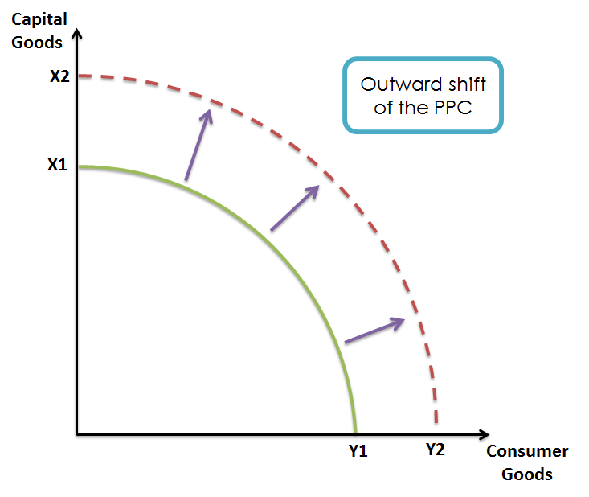
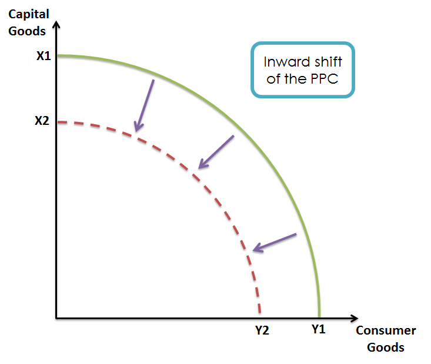

The PPC is a graph that shows all possible combinations of ourput for an economy. It can be used to show opportunity cost, trade off, scarcity, and efficiency of production of goods in an economy. Although this is a simple way to demonstrate key terms in macroeconomics, it also assumes many things.
PPC Curves has a line on the graph that is either bowed out or straight, depending on opportunity cost. This line tells all possible combinations of output for the current economy.
To determine how many of each good is produced, there is a point on the line which indicates the x-coordinate of the graph, or number of consumer goods, and the y-coordinate of the graph, or number of capital goods. The point indicates if the economy has full employment and if the economy is efficient.
If the point is on the PPC line, then it shows that the economy is at full employment and efficient because it means that all resources (land, labor, capital, and entrepreneurship) are being used which makes production efficient. However, if the point is not on the PPC line, then it depends.
If the point is to the left of the PPC line on the graph, then it means that the combination of goods produced is attainable, meaning that it is possible given the current economy. However, the economy is inefficient and has unemployment since all resources are not being used. An example would be if the economy can produce a total of 15 bananas and guns, but the current number produced is 5 bananas and 5 guns. This means that only a total of 10 goods is being produced so the economy is inefficient due to unemployment.
The other possibility is that the point is to the right of the PPC line. This means that the combination of goods produced is unattainable given the current economy. For example, if the economy can produce a total of 15 bananas and guns, then a combination of 7 bananas and 10 guns is impossible given the current economy.
It is also possible to move the PPC line due to the state of the economy. For example, the PPC line might shift to the right if there is economic growth. Economic growth can come from better technology or education. If the economy is doing poorly, such as a recession or depression or production slows, then the PPC line would shift to the left. The point on a PPC Curve can also be shifted due to two reasons. The first reason is that the combination of goods a country makes changes such as instead of making 5 guns and 2 butter, the country begins to make 3 guns and 4 butter due to more demand for butter than guns. This would result in a shift along the PPC line. The second reason is that there is a rise in unemployment, which would cause the point to shift left, to the left of the PPC line.
 On the Production Possibilities Curve above, there are three points: A, B, and C. The points indicate if there is unemployment and if the economy is efficient.
Practice makes perfect when it comes to PPC Curves. So for the following problems, draw a normal PPC curve and show how the PPC line or PPC curve changes from the following changes.